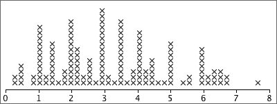
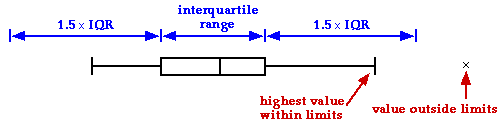
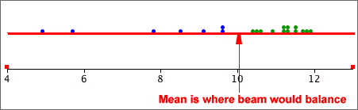

If you don't want to print now,
Information from the variation in data
Variation in data is not simply an annoyance — the variation itself can hold important information.
Simply sorting a data set into order can highlight features that are not obvious in the raw data, such as the lack of values between 3.4 and 4.9 in the data below.
| 6.1 | 5.2 | 7.9 | 2.3 | 3.4 |
| 1.4 | 5.3 | 7.1 | 3.2 | 2.8 |
| 5.1 | 6.9 | 6.1 | 3.4 | 5.2 |
| 5.5 | 2.0 | 1.3 | 4.9 | 6.4 |
Dot plots
Some ranges of values are more common than others — they have higher density.
The simplest graphical display of data that shows where there is high and low density is a dot plot. This shows each value as a cross (or dot) against a numerical axis.
The gap between 3.4 and 4.9 is more obvious on the right than in a textual list of values, whether ordered or not.
Jittering the crosses
In all but the smallest data sets, the crosses on a basic dot plot overlap, making it difficult to identify regions of high density.
Randomly moving crosses away from the axis reduces this problem by separating the crosses:
Note that the vertical jittering is random and therefore tells you nothing about the data.
Stacked dot plots
Stacking the crosses into columns is usually better than jittering them.

Stacking highlights regions of high density well (tall stacks).
Unhelpful detail when comparing groups
Dot plots, stem and leaf plots and histograms contain a lot of detail about the distribution of values in a data set. This level of detail is useful when examining a single data set, but when several groups of values are being compared, the detail distracts from the main differences between the groups.
For example, the jittered dot plots below do not concisely summarise the differences between the five groups.

Five-number summary
Five values are enough to capture a lot of information about the distribution of values in a data set.
These values split the data set into four groups with approximately equal numbers of values.
Box plot
A box plot displays the five-number summary graphically.

Details
The median, m, is the middle value if there is an odd number of values in the data set. If there is an even number of values, the median is the average of the middle two.
Different authors give slightly different definitions for the upper and lower quartiles. One definition of the lower quartile is the median of the lowest half of the data — i.e. of the values lower than m. (The upper quartile would then be defined as the median of the top half of the values.)
Provided you are consistent, different definitions of the quartiles should lead you to the same conclusions.
Outliers and skew distributions
Basic box plots cannot show whether the minimum and maximum in a distribution are outliers or simply the end of skew distributions.

Improved box plot
Box plots are often drawn with 'outliers' shown as separate crosses. The usual definition of 'outliers' in box plots are values more than 1.5 interquartile ranges outside the two quartiles.

Box plots to compare groups
To display the distribution of values in a single set of data, a dot plot or histogram is more useful than a box plot. However for comparison of two or more groups of values box plots are particularly effective — they highlight differences between the centres, spreads of values and skewness of the groups.

Stability of the shape of box plots
When used for small data sets, features in dot plots, stem and leaf plots and histograms are relatively unstable. Although more stable, the shapes of box plots also vary if different data are collected from the same process.
Care must be taken not to over-interpret the shape of box plots for small data sets.
As with other displays, the larger the data set, the more stable the box plots become.
Simple summaries of centre and spread
Information from median and interquartile range
Given the median and interquartile range, it is possible to sketch a bell-shaped histogram that matches these values. Such a 'guess' is often close to the actual distribution of values.

Median
Half of the data values are below the median and half are above it:

Mean
The mean is:

If each value in a dot plot was a solid object resting on a beam with negligible mass, the mean is the value at which the beam will balance.

Because of the leverage exerted by points far from the centre, the mean is further into the tail of a skew distribution than you might expect.
Although both describe aspects of the 'centre' of a distribution, the median and mean are not the same and can occasionally have very different values.
Social vs economic indicator
For some data sets, the median can be considered to be a social indicator, whereas the mean can be interpreted as an economic indicator. In a company,
Outliers
An outlier has little effect on the median, but affects the mean more strongly. The median is said to be more robust.
Skew distributions
When a distribution is fairly symmetrical, the mean and median are similar, but if the distribution is skew, then the mean is usually further into the tail of the distribution than the median.

Simple measures of spread
These are (relatively) easy to understand and explain to others, but neither are commonly used.
Standard deviation
The standard deviation is a 'typical' distance of values from the sample mean.

The standard deviation is denoted by the letter s and is defined by:

The numerator,  , depends on the distances of the values to the mean, so it will be small if the values are all close to the mean and big if they are far from the mean.
, depends on the distances of the values to the mean, so it will be small if the values are all close to the mean and big if they are far from the mean.
Variance
The square of the standard deviation, s2, is called the sample variance. Variances are sometimes reported and used but standard deviations are easier to interpret since they have the same units as the original data (e.g. kilograms or dollars).
'Quarter-range' rule of thumb
For many data sets, the standard deviation is just under a quarter of the range.
 |
This is a simple rule, but is only very approximate. The standard deviation can be more than a quarter the range in distributions with short tails or much less if there are long tails or outliers.
The 70-95-100 rule of thumb
The 70-95-100 rule is more accurate. In many distributions,
The 70-95-100 rule holds approximately for most reasonably symmetric data sets, but for skew data or distributions with long tails, outliers or clusters, it is often less accurate.
The shape of a distribution
| The mean and standard deviation hold no information about the shape of a distribution, other than its centre and spread. |
Many different distributions have the same mean and standard deviation.

Clusters, outliers and skewness are important features of a data set and should influence the analysis that you perform and the conclusions that you reach. In particular, if you ignore outliers or clusters, you could easily reach the wrong conclusions.
| It is therefore essential that you look at a graphical display of a distribution before summarising with a mean and standard deviation. |
Outliers and the standard deviation
The mean and standard deviation are inadequate descriptions of distributions that have clusters, outliers or skewness.
An outlier has a strong influence on the mean of the data and an even bigger effect on the standard deviation. In the data below, one measurement was missing and coded as '999'. If this value (999) is included, the mean is a feasible value, but the standard deviation should be recognised as being unreasonable.

A graphical display such as a dot plot is the best way to detect an outlier and you should always look at the data before summarising with a mean and standard deviation.
An outlier should be carefully examined. Was the value incorrectly recorded? Was there something unusual about the individual from which the measurement was obtained? If we are convinced that there was something wrong about the value, it should be removed from the data set before further analysis.